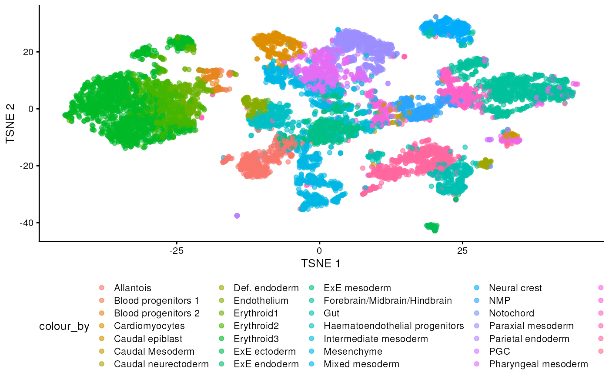
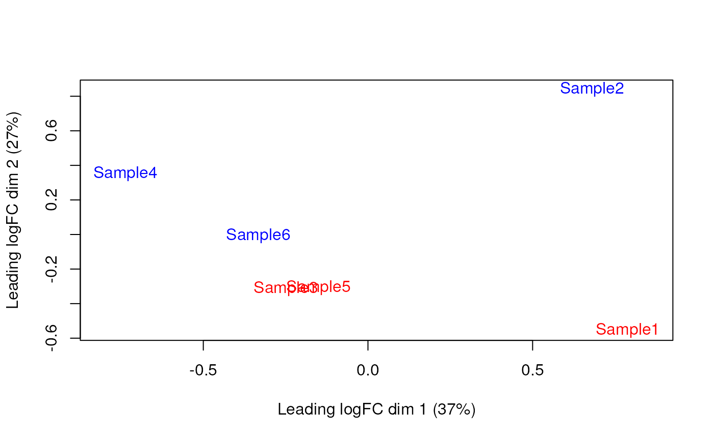
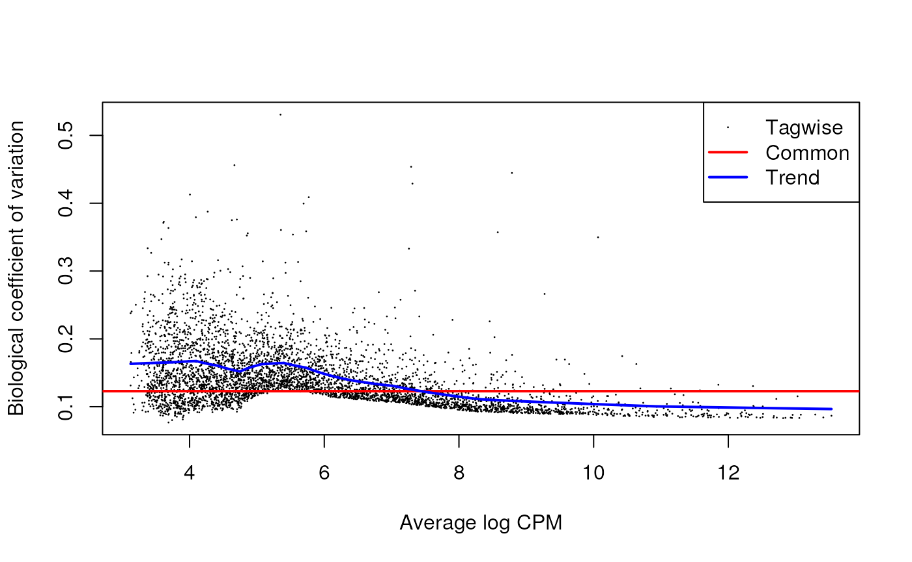

Setup and data exploration
As said, we will use the the data from the Tal1 chimera experiment:
- Sample 5: E8.5 injected cells (tomato positive), pool 3
- Sample 6: E8.5 host cells (tomato negative), pool 3
- Sample 7: E8.5 injected cells (tomato positive), pool 4
- Sample 8: E8.5 host cells (tomato negative), pool 4
- Sample 9: E8.5 injected cells (tomato positive), pool 5
- Sample 10: E8.5 host cells (tomato negative), pool 5
Note that this is a paired design in which for each biological replicate (pool 3, 4, and 5), we have both host and injected cells.
We start by loading the data and doing a quick exploratory analysis, essentially applying the normalization and visualization techniques that we have seen in the previous lectures to all samples.
library(MouseGastrulationData)
sce <- WTChimeraData(samples=5:10, type = "processed")
sce## class: SingleCellExperiment
## dim: 29453 20935
## metadata(0):
## assays(1): counts
## rownames(29453): ENSMUSG00000051951 ENSMUSG00000089699 ...
## ENSMUSG00000095742 tomato-td
## rowData names(2): ENSEMBL SYMBOL
## colnames(20935): cell_9769 cell_9770 ... cell_30702 cell_30703
## colData names(11): cell barcode ... doub.density sizeFactor
## reducedDimNames(2): pca.corrected.E7.5 pca.corrected.E8.5
## mainExpName: NULL
## altExpNames(0):
colData(sce)## DataFrame with 20935 rows and 11 columns
## cell barcode sample stage tomato
## <character> <character> <integer> <character> <logical>
## cell_9769 cell_9769 AAACCTGAGACTGTAA 5 E8.5 TRUE
## cell_9770 cell_9770 AAACCTGAGATGCCTT 5 E8.5 TRUE
## cell_9771 cell_9771 AAACCTGAGCAGCCTC 5 E8.5 TRUE
## cell_9772 cell_9772 AAACCTGCATACTCTT 5 E8.5 TRUE
## cell_9773 cell_9773 AAACGGGTCAACACCA 5 E8.5 TRUE
## ... ... ... ... ... ...
## cell_30699 cell_30699 TTTGTCACAGCTCGCA 10 E8.5 FALSE
## cell_30700 cell_30700 TTTGTCAGTCTAGTCA 10 E8.5 FALSE
## cell_30701 cell_30701 TTTGTCATCATCGGAT 10 E8.5 FALSE
## cell_30702 cell_30702 TTTGTCATCATTATCC 10 E8.5 FALSE
## cell_30703 cell_30703 TTTGTCATCCCATTTA 10 E8.5 FALSE
## pool stage.mapped celltype.mapped closest.cell
## <integer> <character> <character> <character>
## cell_9769 3 E8.25 Mesenchyme cell_24159
## cell_9770 3 E8.5 Endothelium cell_96660
## cell_9771 3 E8.5 Allantois cell_134982
## cell_9772 3 E8.5 Erythroid3 cell_133892
## cell_9773 3 E8.25 Erythroid1 cell_76296
## ... ... ... ... ...
## cell_30699 5 E8.5 Erythroid3 cell_38810
## cell_30700 5 E8.5 Surface ectoderm cell_38588
## cell_30701 5 E8.25 Forebrain/Midbrain/H.. cell_66082
## cell_30702 5 E8.5 Erythroid3 cell_138114
## cell_30703 5 E8.0 Doublet cell_92644
## doub.density sizeFactor
## <numeric> <numeric>
## cell_9769 0.02985045 1.41243
## cell_9770 0.00172753 1.22757
## cell_9771 0.01338013 1.15439
## cell_9772 0.00218402 1.28676
## cell_9773 0.00211723 1.78719
## ... ... ...
## cell_30699 0.00146287 0.389311
## cell_30700 0.00374155 0.588784
## cell_30701 0.05651258 0.624455
## cell_30702 0.00108837 0.550807
## cell_30703 0.82369305 1.184919To speed up computations, after removing doublets, we randomly select 500 cells per sample.
## Loading required package: scuttle## Loading required package: ggplot2
library(ggplot2)
library(scran)
# remove doublets
drop <- sce$celltype.mapped %in% c("stripped", "Doublet")
sce <- sce[,!drop]
set.seed(29482)
idx <- unlist(tapply(colnames(sce), sce$sample, function(x) sample(x, 500)))
sce <- sce[,idx]We now normalize the data and visualize them in a tSNE plot.
# normalization
sce <- logNormCounts(sce)
# identify highly variable genes
dec <- modelGeneVar(sce, block=sce$sample)
chosen.hvgs <- dec$bio > 0
# dimensionality reduction
sce <- runPCA(sce, subset_row = chosen.hvgs, ntop = 1000)
sce <- runTSNE(sce, dimred = "PCA")
sce$sample <- as.factor(sce$sample)
plotTSNE(sce, colour_by = "sample")
plotTSNE(sce, colour_by = "celltype.mapped") +
scale_color_discrete() +
theme(legend.position = "bottom")## Scale for colour is already present.
## Adding another scale for colour, which will replace the existing scale.
There are evident sample effects. Depending on the analysis that you want to do you may want to remove or retain the sample effect. For instance, if the goal is to identify cell types with a clustering method, one may want to remove the sample effects with “batch effect” correction methods.
For now, let’s assume that we want to remove this effect.
Correcting batch effects
We correct the effect of samples by aid of the
correctExperiment function in the batchelor
package and using the sample colData column as
batch.
## This needs work
library(batchelor)
set.seed(10102)
merged <- correctExperiments(sce,
batch=sce$sample,
subset.row=chosen.hvgs,
PARAM=FastMnnParam(
merge.order=list(
list(1,3,5), # WT (3 replicates)
list(2,4,6) # td-Tomato (3 replicates)
)
)
)
merged <- runTSNE(merged, dimred="corrected")
plotTSNE(merged, colour_by="batch")Once we removed the sample batch effect, we can proceed with the Differential Expression Analysis.
Differential Expression
Section 4 of OSCA multisample.
In order to perform a Differential Expression Analysis, we need to identify group of cells across samples/conditions (depending on the experimental design and the final aim of the experiment).
As previously saw, we have two ways of grouping cells, cell clustering and cell labeling. In our case we will focus on this secon aspect to group cells accordingly to the already annotated cell types to proceed with the computation of the pseudo-bulk samples.
Pseudo-bulk samples
To compute differences between different group of cells, a possible way is to compute pseudo-bulk samples, where we mediate the gene signal of all the cells for each specific cell type. In this manner, we are then able to detect differences between the same cell type across two different condition, but also across different cell types in the same condition, etcetera.
To compute pseudo-bulk samples, we use
aggregateAcrossCells function in the scuttle
package, which takes as input not only the single cell experiment, but
also the id to use for the identification of the group of cells. In our
case, we use as id not just the cell type, but also the sample, because
we want be able to discern between replicates and conditions during
further steps.
# Using 'label' and 'sample' as our two factors; each column of the output
# corresponds to one unique combination of these two factors.
library(scuttle)
summed <- aggregateAcrossCells(merged,
id=colData(merged)[,c("celltype.mapped", "sample")])
summed## class: SingleCellExperiment
## dim: 12224 161
## metadata(2): merge.info pca.info
## assays(1): counts
## rownames(12224): ENSMUSG00000025900 ENSMUSG00000025902 ...
## ENSMUSG00000095041 ENSMUSG00000095742
## rowData names(3): rotation ENSEMBL SYMBOL
## colnames: NULL
## colData names(15): batch cell ... sample ncells
## reducedDimNames(5): corrected pca.corrected.E7.5 pca.corrected.E8.5 PCA
## TSNE
## mainExpName: NULL
## altExpNames(0):Differential Expression Analysis
The main advantage of using pseudo-bulk samples is the possibility to
use well-tested methods for differential analysis like
edgeR and DESeq2, we will focus on the first
one for this analysis. edgeR uses a Negative Binomial
Generalized Linear Modal for data with a limited number of replicates,
like our case.
Before to begin our analysis, let’s say that we are mostly interested in a specific cell type, the “Mesenchymal stem cells” and look into differences across different conditions.
label <- "Mesenchyme"
current <- summed[,label==summed$celltype.mapped]
# Creating up a DGEList object for use in edgeR:
library(edgeR)## Loading required package: limma##
## Attaching package: 'limma'## The following object is masked from 'package:scater':
##
## plotMDS## The following object is masked from 'package:BiocGenerics':
##
## plotMA##
## Attaching package: 'edgeR'## The following object is masked from 'package:SingleCellExperiment':
##
## cpm## An object of class "DGEList"
## $counts
## Sample1 Sample2 Sample3 Sample4 Sample5 Sample6
## ENSMUSG00000025900 0 0 0 0 0 0
## ENSMUSG00000025902 0 0 2 0 0 0
## ENSMUSG00000104217 0 0 0 0 0 0
## ENSMUSG00000002459 2 0 0 1 0 0
## ENSMUSG00000025905 2 0 3 0 0 1
## 12219 more rows ...
##
## $samples
## group lib.size norm.factors batch cell barcode sample stage tomato pool
## Sample1 1 952221 1 5 <NA> <NA> 5 E8.5 TRUE 3
## Sample2 1 598884 1 6 <NA> <NA> 6 E8.5 FALSE 3
## Sample3 1 403466 1 7 <NA> <NA> 7 E8.5 TRUE 4
## Sample4 1 174195 1 8 <NA> <NA> 8 E8.5 FALSE 4
## Sample5 1 400242 1 9 <NA> <NA> 9 E8.5 TRUE 5
## Sample6 1 211763 1 10 <NA> <NA> 10 E8.5 FALSE 5
## stage.mapped celltype.mapped closest.cell doub.density sizeFactor
## Sample1 <NA> Mesenchyme <NA> NA NA
## Sample2 <NA> Mesenchyme <NA> NA NA
## Sample3 <NA> Mesenchyme <NA> NA NA
## Sample4 <NA> Mesenchyme <NA> NA NA
## Sample5 <NA> Mesenchyme <NA> NA NA
## Sample6 <NA> Mesenchyme <NA> NA NA
## celltype.mapped.1 sample.1 ncells
## Sample1 Mesenchyme 5 60
## Sample2 Mesenchyme 6 31
## Sample3 Mesenchyme 7 41
## Sample4 Mesenchyme 8 22
## Sample5 Mesenchyme 9 46
## Sample6 Mesenchyme 10 35A typical step is the discard of low quality samples due to low sequenced library size. We discard these samples because they can affect further steps like normalization and/or DEGs analysis.
We can see that in our case we don’t have low quality samples and we don’t need to filter out any of them.
discarded <- current$ncells < 10
y <- y[,!discarded]
summary(discarded)## Mode FALSE
## logical 6The same idea is typically applied to the genes, indeed we need to discard low expressed genes to improve accuracy for the DEGs modeling.
We can see that in the case of the genes we discard 5688 of them, reducing the number of genes to test for further analysis to 9011.
keep <- filterByExpr(y, group=current$tomato)
y <- y[keep,]
summary(keep)## Mode FALSE TRUE
## logical 9332 2892Once we consider the data satisfying, we can proceed to normalize
them. There are several approaches for normalizing bulk, and so
pseudo-bulk data, but we stick with the Trimmed Mean of M-values method
implemented in the edgeR package with the
calcNormFactors function. Keep in mind that because we are
going to normalize the pseudo-bulk counts, we don’t need to normalize
the data in “single cell form”.
y <- calcNormFactors(y)
y$samples## group lib.size norm.factors batch cell barcode sample stage tomato pool
## Sample1 1 952221 1.0402723 5 <NA> <NA> 5 E8.5 TRUE 3
## Sample2 1 598884 1.0300931 6 <NA> <NA> 6 E8.5 FALSE 3
## Sample3 1 403466 0.9820112 7 <NA> <NA> 7 E8.5 TRUE 4
## Sample4 1 174195 0.9798656 8 <NA> <NA> 8 E8.5 FALSE 4
## Sample5 1 400242 0.9784025 9 <NA> <NA> 9 E8.5 TRUE 5
## Sample6 1 211763 0.9912336 10 <NA> <NA> 10 E8.5 FALSE 5
## stage.mapped celltype.mapped closest.cell doub.density sizeFactor
## Sample1 <NA> Mesenchyme <NA> NA NA
## Sample2 <NA> Mesenchyme <NA> NA NA
## Sample3 <NA> Mesenchyme <NA> NA NA
## Sample4 <NA> Mesenchyme <NA> NA NA
## Sample5 <NA> Mesenchyme <NA> NA NA
## Sample6 <NA> Mesenchyme <NA> NA NA
## celltype.mapped.1 sample.1 ncells
## Sample1 Mesenchyme 5 60
## Sample2 Mesenchyme 6 31
## Sample3 Mesenchyme 7 41
## Sample4 Mesenchyme 8 22
## Sample5 Mesenchyme 9 46
## Sample6 Mesenchyme 10 35To investigate the effect of our normalization, we use an MD plot for each sample in order to detect possible normalization problems due to insufficient cells/reads/UMIs composing a particular pseudo-bulk profile.
In our case, we verify that all these plots are centered in 0 (on y-axis) and present a trumpet shape, as expected.
On the other hand, we want to understand if the samples weel-group together based on their known factors (like the tomato injection in this case).
To do so, we use the MDS plot, which is very close to a PCA representation.

We then construct a matrix factor by including both the pool and the tomato as factors. This design indicates which samples belong to which pool and condition, so we can use it in the next step of the analysis.
design <- model.matrix(~factor(pool) + factor(tomato), y$samples)
design## (Intercept) factor(pool)4 factor(pool)5 factor(tomato)TRUE
## Sample1 1 0 0 1
## Sample2 1 0 0 0
## Sample3 1 1 0 1
## Sample4 1 1 0 0
## Sample5 1 0 1 1
## Sample6 1 0 1 0
## attr(,"assign")
## [1] 0 1 1 2
## attr(,"contrasts")
## attr(,"contrasts")$`factor(pool)`
## [1] "contr.treatment"
##
## attr(,"contrasts")$`factor(tomato)`
## [1] "contr.treatment"Now we can compute the Negative Binomial (NB) overdispersion parameter, to model the mean-variance trend.
y <- estimateDisp(y, design)
summary(y$trended.dispersion)## Min. 1st Qu. Median Mean 3rd Qu. Max.
## 0.01640 0.01903 0.03382 0.03204 0.04239 0.04623The BCV plot allows us to investigate the relation between the
Biological Coefficient of Variation and the Average log CPM for each
gene. Additionally, the Common and Trend BCV are shown in
red and blue.
plotBCV(y)
We then estimate a QL dispersion from the deviance of a GLM for each
gene. The robust=TRUE parameter avoids distorsion from
highly variable clusters. This is useful to handle the uncertainty and
variability of the per-gene variance which is not well estimated by the
NB dispersions, so the two dispersion types complement each other in the
final analysis.
## Min. 1st Qu. Median Mean 3rd Qu. Max.
## 0.3906 0.7350 0.8886 0.8363 0.9169 1.1865
summary(fit$df.prior)## Min. 1st Qu. Median Mean 3rd Qu. Max.
## 0.2789 13.7731 13.7731 13.3698 13.7731 13.7731QL dispersion estimates for each gene as a function of abundance. Raw estimates (black) are shrunk towards the trend (blue) to yield squeezed estimates (red).
plotQLDisp(fit)
We then use the QL-test function to test for Fold-Change (FC) differences (due to tomato injection) per each gene at a False Discovery Rate (FDR) of 5%. The low amount of DGEs highlights that the tomato injection effect has a low influence on the mesenchyme cells.
res <- glmQLFTest(fit, coef=ncol(design))
summary(decideTests(res))## factor(tomato)TRUE
## Down 4
## NotSig 2878
## Up 10
topTags(res)## Coefficient: factor(tomato)TRUE
## logFC logCPM F PValue FDR
## ENSMUSG00000096768 2.3553486 8.805445 220.79204 1.082724e-10 3.131237e-07
## ENSMUSG00000027520 2.4084381 7.007835 64.99689 5.537775e-07 8.007623e-04
## ENSMUSG00000101609 1.6220561 7.444688 49.63427 2.998825e-06 2.890867e-03
## ENSMUSG00000010760 -3.8963507 10.113367 190.95679 5.277514e-06 3.815643e-03
## ENSMUSG00000035299 1.8932108 7.142674 40.12079 1.253358e-05 7.249422e-03
## ENSMUSG00000002265 0.8020709 10.252732 34.94573 2.323033e-05 1.119702e-02
## ENSMUSG00000040212 -2.5448004 4.694483 27.21738 8.868906e-05 3.240657e-02
## ENSMUSG00000069833 0.9617152 8.581593 26.97303 9.450038e-05 3.240657e-02
## ENSMUSG00000036446 -0.7719616 9.456712 26.54355 1.008503e-04 3.240657e-02
## ENSMUSG00000006311 2.1719197 5.781086 25.22545 1.304925e-04 3.718002e-02All the previous steps can be easily performed with the following
function for each cell type, thanks to the pseudoBulkDGE
function in the scran package.
library(scran)
summed.filt <- summed[,summed$ncells >= 10]
de.results <- pseudoBulkDGE(summed.filt,
label=summed.filt$celltype.mapped,
design=~factor(pool) + tomato,
coef="tomatoTRUE",
condition=summed.filt$tomato
)The returned object is a list of DataFrames each with
the results for a cell type. Each of these contains also the
intermediate results in edgeR format to perform any
intermediate plot or diagnostic.
cur.results <- de.results[["Allantois"]]
cur.results[order(cur.results$PValue),]## DataFrame with 12224 rows and 5 columns
## logFC logCPM F PValue FDR
## <numeric> <numeric> <numeric> <numeric> <numeric>
## ENSMUSG00000010760 -2.283461 12.36685 257.2189 7.63721e-10 1.83064e-06
## ENSMUSG00000086503 -5.844385 6.52504 122.8816 6.34642e-08 7.60619e-05
## ENSMUSG00000096768 2.158359 9.33834 99.3260 2.16745e-07 1.73179e-04
## ENSMUSG00000029580 -0.812811 12.76710 86.7945 4.65546e-07 2.78978e-04
## ENSMUSG00000101609 2.957612 7.77409 40.2402 2.76997e-05 1.10673e-02
## ... ... ... ... ... ...
## ENSMUSG00000061654 NA NA NA NA NA
## ENSMUSG00000079834 NA NA NA NA NA
## ENSMUSG00000095247 NA NA NA NA NA
## ENSMUSG00000095041 NA NA NA NA NA
## ENSMUSG00000095742 NA NA NA NA NADifferential Abundance
With DA we test for differences between clusters across conditions, to investigate which clusters change accordingly to the treatment (the tomato injection in our case).
We first setup some code and variables for further analysis, like quantifying the number of cells per each cell type and fit a model to catch differences between the injected cells and the background.
The performed steps are very similar to the ones for DEGs analysis, but this time we start our analysis on the computed abundances and without normalizing the data with TMM.
library(edgeR)
abundances <- table(merged$celltype.mapped, merged$sample)
abundances <- unclass(abundances)
# Attaching some column metadata.
extra.info <- colData(merged)[match(colnames(abundances), merged$sample),]
y.ab <- DGEList(abundances, samples=extra.info)
keep <- filterByExpr(y.ab, group=y.ab$samples$tomato)
y.ab <- y.ab[keep,]
design <- model.matrix(~factor(pool) + factor(tomato), y.ab$samples)
y.ab <- estimateDisp(y.ab, design, trend="none")
fit.ab <- glmQLFit(y.ab, design, robust=TRUE, abundance.trend=FALSE)Background on compositional effect
As mentioned before, in DA we don’t normalize our data with
calcNormFactors function, because this approach considers
that most of the input features do not vary between conditions. Which
cannot be applied to this analysis because we have a small number of
cell populations that all can change due to the treatment. Leaving us to
normalize only for library depth, which in pseudo-bulk data means by the
total number of cells in each sample (cell type).
On the other hand, this can lead our data to be susceptible to compositional effect, that means that our conclusions can be biased by the amount of cells present in each cell type. And this amount of cells can be totally unbalanced between cell types.
For example, a specific cell type can have the 40% of the total amount of cells present in the experiment, while another just the 3%. The differences in terms of abundance of these cell types are detected between the different conditions, but our final interpretation could be biased if we don’t consider this aspect.
We now look at different approaches for handling the compositional effect.
Assuming most labels do not change
We can use a similar approach used during the DEGs analysis, assuming that most labels are not changing, in particular if we think about the low number of DEGs resulted from the previous analysis.
To do so, we first normalize the data with
calcNormFactors and then we fit and estimate a QL-model for
our abundance data.
y.ab2 <- calcNormFactors(y.ab)
y.ab2$samples$norm.factors## [1] 1.0347252 1.2081899 1.0100763 0.8339180 1.0312635 0.9208579We then follow the already saw edgeR analysis steps. Many of the positive log-fold changes are shifted towards zero, consistent with the removal of composition biases from the presence of extra-embryonic ectoderm in only background cells. As it is possible to notice, the mesenchyme is no longer significantly DA after injection.
y.ab2 <- estimateDisp(y.ab2, design, trend="none")
fit.ab2 <- glmQLFit(y.ab2, design, robust=TRUE, abundance.trend=FALSE)
res2 <- glmQLFTest(fit.ab2, coef=ncol(design))
topTags(res2, n=10)## Coefficient: factor(tomato)TRUE
## logFC logCPM F PValue FDR
## Allantois 1.1450235 15.58397 4.9625408 0.03224195 0.4073020
## Pharyngeal mesoderm 0.8921423 15.83772 3.2561184 0.07952883 0.4073020
## Cardiomyocytes 0.9641155 14.97847 2.8392729 0.10063709 0.4073020
## Neural crest -1.0070587 14.78804 2.7445670 0.10627716 0.4073020
## Erythroid3 -0.7133169 17.30238 2.6367921 0.11313946 0.4073020
## Mesenchyme 0.6773289 16.30824 2.1164994 0.15438389 0.4631517
## Forebrain/Midbrain/Hindbrain -0.4783315 16.47410 1.0877801 0.30391712 0.7815012
## Endothelium 0.5090692 14.53179 0.6878822 0.41235151 0.8442223
## NMP -0.4241986 15.12430 0.5868368 0.44863895 0.8442223
## Spinal cord -0.3310764 15.50451 0.4186412 0.52172035 0.8442223Testing against a log-fold change threshold
This other approach assumes that the composition bias introduces a spurious log2-fold change of no more than a quantity for a non-DA label. In other words, we interpret this as the maximum log-fold change in the total number of cells given by DA in other labels. On the other hand, when choosing , we should not consider fold-differences in the totals due to differences in capture efficiency or the size of the original cell population are not attributable to composition bias. We then mitigate the effect of composition biases by testing each label for changes in abundance beyond .
res.lfc <- glmTreat(fit.ab, coef=ncol(design), lfc=1)
summary(decideTests(res.lfc))## factor(tomato)TRUE
## Down 0
## NotSig 18
## Up 0
topTags(res.lfc)## Coefficient: factor(tomato)TRUE
## logFC unshrunk.logFC logCPM PValue
## Allantois 1.2345618 1.2424898 15.57878 0.1303831
## Cardiomyocytes 0.9973014 1.0079319 14.99868 0.2527610
## Pharyngeal mesoderm 0.9755714 0.9805693 15.82876 0.2644786
## Neural crest -0.8783504 -0.8891224 14.76164 0.3247181
## Mesenchyme 0.7420103 0.7445474 16.31769 0.4487462
## Erythroid3 -0.6379409 -0.6390305 17.26111 0.5575492
## Endothelium 0.5201284 0.5276729 14.55915 0.5740270
## NMP -0.4082472 -0.4117838 15.16374 0.6786762
## Forebrain/Midbrain/Hindbrain -0.4215353 -0.4229418 16.49345 0.7207131
## Surface ectoderm 0.3274000 0.3286359 16.07669 0.7788403
## FDR
## Allantois 0.9771146
## Cardiomyocytes 0.9771146
## Pharyngeal mesoderm 0.9771146
## Neural crest 0.9771146
## Mesenchyme 0.9771146
## Erythroid3 0.9771146
## Endothelium 0.9771146
## NMP 0.9771146
## Forebrain/Midbrain/Hindbrain 0.9771146
## Surface ectoderm 0.9771146Addionally, the choice of can be guided by other external experimental data, like a previous or a pilot experiment.
Session Info
## R version 4.3.0 (2023-04-21)
## Platform: x86_64-pc-linux-gnu (64-bit)
## Running under: Ubuntu 22.04.2 LTS
##
## Matrix products: default
## BLAS: /usr/lib/x86_64-linux-gnu/openblas-pthread/libblas.so.3
## LAPACK: /usr/lib/x86_64-linux-gnu/openblas-pthread/libopenblasp-r0.3.20.so; LAPACK version 3.10.0
##
## locale:
## [1] LC_CTYPE=en_US.UTF-8 LC_NUMERIC=C
## [3] LC_TIME=en_US.UTF-8 LC_COLLATE=en_US.UTF-8
## [5] LC_MONETARY=en_US.UTF-8 LC_MESSAGES=en_US.UTF-8
## [7] LC_PAPER=en_US.UTF-8 LC_NAME=C
## [9] LC_ADDRESS=C LC_TELEPHONE=C
## [11] LC_MEASUREMENT=en_US.UTF-8 LC_IDENTIFICATION=C
##
## time zone: Etc/UTC
## tzcode source: system (glibc)
##
## attached base packages:
## [1] stats4 stats graphics grDevices utils datasets methods
## [8] base
##
## other attached packages:
## [1] edgeR_3.42.4 limma_3.56.2
## [3] batchelor_1.16.0 scran_1.28.1
## [5] scater_1.28.0 ggplot2_3.4.2
## [7] scuttle_1.10.1 MouseGastrulationData_1.14.0
## [9] SpatialExperiment_1.10.0 SingleCellExperiment_1.22.0
## [11] SummarizedExperiment_1.30.2 Biobase_2.60.0
## [13] GenomicRanges_1.52.0 GenomeInfoDb_1.36.1
## [15] IRanges_2.34.1 S4Vectors_0.38.1
## [17] BiocGenerics_0.46.0 MatrixGenerics_1.12.2
## [19] matrixStats_1.0.0 BiocStyle_2.28.0
##
## loaded via a namespace (and not attached):
## [1] jsonlite_1.8.7 magrittr_2.0.3
## [3] ggbeeswarm_0.7.2 magick_2.7.4
## [5] farver_2.1.1 rmarkdown_2.23
## [7] fs_1.6.2 zlibbioc_1.46.0
## [9] ragg_1.2.5 vctrs_0.6.3
## [11] memoise_2.0.1 DelayedMatrixStats_1.22.1
## [13] RCurl_1.98-1.12 htmltools_0.5.5
## [15] S4Arrays_1.0.4 AnnotationHub_3.8.0
## [17] curl_5.0.1 BiocNeighbors_1.18.0
## [19] Rhdf5lib_1.22.0 rhdf5_2.44.0
## [21] sass_0.4.6 bslib_0.5.0
## [23] desc_1.4.2 cachem_1.0.8
## [25] ResidualMatrix_1.10.0 igraph_1.5.0
## [27] mime_0.12 lifecycle_1.0.3
## [29] pkgconfig_2.0.3 rsvd_1.0.5
## [31] Matrix_1.5-4.1 R6_2.5.1
## [33] fastmap_1.1.1 GenomeInfoDbData_1.2.10
## [35] shiny_1.7.4 digest_0.6.32
## [37] colorspace_2.1-0 AnnotationDbi_1.62.2
## [39] rprojroot_2.0.3 dqrng_0.3.0
## [41] irlba_2.3.5.1 ExperimentHub_2.8.0
## [43] textshaping_0.3.6 RSQLite_2.3.1
## [45] beachmat_2.16.0 labeling_0.4.2
## [47] filelock_1.0.2 fansi_1.0.4
## [49] httr_1.4.6 compiler_4.3.0
## [51] bit64_4.0.5 withr_2.5.0
## [53] BiocParallel_1.34.2 viridis_0.6.3
## [55] DBI_1.1.3 highr_0.10
## [57] HDF5Array_1.28.1 R.utils_2.12.2
## [59] rappdirs_0.3.3 DelayedArray_0.26.6
## [61] bluster_1.10.0 rjson_0.2.21
## [63] tools_4.3.0 vipor_0.4.5
## [65] beeswarm_0.4.0 interactiveDisplayBase_1.38.0
## [67] httpuv_1.6.11 R.oo_1.25.0
## [69] glue_1.6.2 rhdf5filters_1.12.1
## [71] promises_1.2.0.1 grid_4.3.0
## [73] Rtsne_0.16 cluster_2.1.4
## [75] generics_0.1.3 gtable_0.3.3
## [77] R.methodsS3_1.8.2 metapod_1.8.0
## [79] BiocSingular_1.16.0 ScaledMatrix_1.8.1
## [81] utf8_1.2.3 XVector_0.40.0
## [83] ggrepel_0.9.3 BiocVersion_3.17.1
## [85] pillar_1.9.0 stringr_1.5.0
## [87] BumpyMatrix_1.8.0 later_1.3.1
## [89] splines_4.3.0 dplyr_1.1.2
## [91] BiocFileCache_2.8.0 lattice_0.21-8
## [93] bit_4.0.5 tidyselect_1.2.0
## [95] locfit_1.5-9.8 Biostrings_2.68.1
## [97] knitr_1.43 gridExtra_2.3
## [99] xfun_0.39 statmod_1.5.0
## [101] DropletUtils_1.20.0 stringi_1.7.12
## [103] yaml_2.3.7 evaluate_0.21
## [105] codetools_0.2-19 tibble_3.2.1
## [107] BiocManager_1.30.21 cli_3.6.1
## [109] xtable_1.8-4 systemfonts_1.0.4
## [111] munsell_0.5.0 jquerylib_0.1.4
## [113] Rcpp_1.0.10 dbplyr_2.3.2
## [115] png_0.1-8 parallel_4.3.0
## [117] ellipsis_0.3.2 pkgdown_2.0.7
## [119] blob_1.2.4 sparseMatrixStats_1.12.2
## [121] bitops_1.0-7 viridisLite_0.4.2
## [123] scales_1.2.1 purrr_1.0.1
## [125] crayon_1.5.2 rlang_1.1.1
## [127] formatR_1.14 cowplot_1.1.1
## [129] KEGGREST_1.40.0Further Reading
- OSCA book, Multi-sample analysis, Chapters 1, 4, and 6